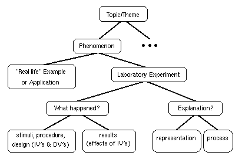
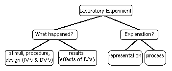
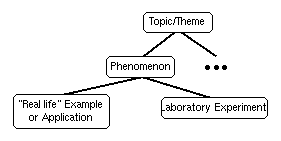

Course Topic:
Cognitive psychologists study how people perceive and attend to the
environment, how people learn and remember, how they comprehend and
produce language, and how they reason and make decisions. I
(Prof. Kruschke) define cognitive psychology as the reverse
engineering of mind. Reverse engineering is a procedure
that analyzes a working machine into its parts and interactions, with
the goals of explaining, manipulating, and replicating the behavior of
the machine. For example, aerospace engineers in various countries
have been working hard to reverse engineer the American ``Stealth''
bomber. In cognitive psychology, the object of inquiry is the mind, a
far more elusive target than the Stealth Bomber. Cognitive psychology
treats the mind as the software, or program, that runs on the computer
hardware of the brain. As illustrated in the figure at left, this
computer metaphor asserts that mind (the ``thought bubble'')
is to brain (the head) as software (the flowchart) is to hardware (the
circuit board). Thus, one goal of cognitive psychology is to figure
out the flow of information processing in the complicated program
implemented by the brain. The point of the computer metaphor is not
to assert that the mind is a program or that the brain
is a digital computer, rather, the point is that we might
study human cognition at the level of information processing
(software) separately from the level of neural processing (hardware),
just as we can with computers.
Course Topic:
Cognitive psychologists study how people perceive and attend to the
environment, how people learn and remember, how they comprehend and
produce language, and how they reason and make decisions. I
(Prof. Kruschke) define cognitive psychology as the reverse
engineering of mind. Reverse engineering is a procedure
that analyzes a working machine into its parts and interactions, with
the goals of explaining, manipulating, and replicating the behavior of
the machine. For example, aerospace engineers in various countries
have been working hard to reverse engineer the American ``Stealth''
bomber. In cognitive psychology, the object of inquiry is the mind, a
far more elusive target than the Stealth Bomber. Cognitive psychology
treats the mind as the software, or program, that runs on the computer
hardware of the brain. As illustrated in the figure at left, this
computer metaphor asserts that mind (the ``thought bubble'')
is to brain (the head) as software (the flowchart) is to hardware (the
circuit board). Thus, one goal of cognitive psychology is to figure
out the flow of information processing in the complicated program
implemented by the brain. The point of the computer metaphor is not
to assert that the mind is a program or that the brain
is a digital computer, rather, the point is that we might
study human cognition at the level of information processing
(software) separately from the level of neural processing (hardware),
just as we can with computers.

Goals of This Course: The figure at left shows how
knowledge in this course is organized, and it also shows the main
goals of the course. The course includes many topics or themes
(indicated at the top of the figure), such as attention, perception,
memory, etc., and within each topic are many phenomena, such as the
limited capacity of attention, or the distinction between long-term
and short-term memory. One goal of the course, indicated at the
middle-left of the figure, is for you to discover real-life examples
of those phenomena, so that the relevance of the material to our lives
is clear. Another goal of the course is for you to understand
thoroughly the scientific reasoning underlying laboratory
experimentation, as indicated by the lower branches of the tree in the
figure. The overall goal is for you to understand better the relations
between laboratory data, theory, and everyday life, in science
generally, not only in cognitive psychology. (Week-by-week topical goals are itemized on
another page.)

Exam Format: Exams will consist mostly of short-essay
questions (answers of two or three paragraphs), combined with some
multiple-choice questions. Typically an exam will have seven essay
questions from which you choose any four to answer. Each exam,
including the final, will cover only the material discussed since the
previous exam. The essay questions tend to emphasize the lower
branches of the knowledge organization, as reproduced in the figure at
left. (In the figure, ``IV'' and ``DV'' stand for independent variable
and dependent variable, respectively.) Your answers to exam
questions should explicitly address each of the boxes of the
tree. The exams help you accomplish the goals of organizing your
knowledge in a way that applies to science (and life) generally.
Exam Schedule: There will be three mid-term exams and
a final exam (4 exams total).
Mid-Term Exam 1: Thursday of 4th week, 26 September
Mid-Term Exam 2: Tuesday of 8th week, 22 October.
Mid-Term Exam 3: Thursday of 11th week, 14 November.
Final Exam: 12:30--2:30 pm , Tuesday, 17 December.
Exam Grading: Each exam is worth 100 points. If you
want to dispute a score you receive, you must submit your reasons
in writing, along with your scored exam. This policy is
helpful for two reasons: First, if a score change is justified, it
gives us a paper document as a record of the change. Second, it gives
you a chance to think through and present your argument carefully, to
maximize your chances of success.
Exam Attendance: All four exams are
mandatory. Missing an exam is strongly discouraged! If you
know in advance that you must miss an exam, please let me know ahead
of time, and it will usually be possible to take the exam one or two
days before the scheduled date. If you unexpectedly miss an exam, you
may take a make-up exam only if you have a cogent excuse,
and only if you discuss the absence with me as soon as
possible (typically the same or next day, via phone or e-mail if not
in person). Make-up exams might not have the same format as in-class
exams, and instead might consist entirely of essay questions.
"Application" Paper:
Due at the last class session is a paper that describes a "real-life"
application of theoretical issues discussed in the course. Whereas the
exams emphasize the lower levels of the knowledge organization, the
"application" paper emphasizes the higher levels, as reproduced in the
figure at right. Completing the paper is designed to achieve the goal
of relating cognitive psychology to everyday life.
- Application Paper Content and Format:
- You must find an article (or advertisement) in the
popular, non-academic media (newspaper, magazine, popular
book, phone directory, World Wide Web, or even TV or radio
provided you have an exact transcript) that exemplifies a
real-life application of issues discussed in class. In your paper, (1)
summarize the item, emphasizing the aspects that are relevant to the
course; (2) explain exactly how particular theories and/or experiments
discussed in class and in the textbook relate to the real-life
situation; and, (3) discuss implications for the real-life situation
that are not mentioned in the item, based on theories and/or
experiments discussed in class. Also, (4) be sure to include a
photocopy of the item, and an exact citation of the source of the item
(including pages numbers, dates, place of publication, etc.). That way
I can go to the original source if I would like to use it for future
classes. Please see further
explanation of the paper structure and comments about the papers on separate
pages.
You must write a brief proposal for a topic and an outline of your
paper, due in class on the Thursday of the ninth week, the 31st of
October. Turning in the proposal is worth 10 points. The proposal
should include (1) a brief description of the topic, and (2) an
outline of various links to course material and of implications from
course material to the topic. You may change topics for your final
paper, and feedback on your proposal should be useful to you.
- Applications Papers Topic:
- The topic should have links to at least five different
concepts in the course, with implications from at least five different
concepts. For possible links and implications, see (on separate
pages) the list of possible topics, and
the example of a paper outline.
- Application Papers Length:
- The paper should be about six to ten pages long,
double-spaced and typed.
- Application Papers Grading:
- The paper is worth up to 40 points. Papers are graded for
how well they satisfy the four parts specified above: summary of
relevance, 7 pts; explanation of at least five specific links, 15 pts;
discussion of at least five implications, 15 pts; complete citation
and photocopy, 3 pts. Each section should have an explicit header.
Be sure to read about common problems
with application papers (on a separate page).
- Application Paper Schedule:
- Topic proposal and paper outline due in class on Thursday 31 October.
Completed paper due in class on Tuesday 10 December.
- We will keep your paper, so be sure to make a copy for
yourself before turning it in.
Course Grading Method: Course
grades will be based on absolute thresholds for total points, summing
exam points plus paper points (450 possible), according to the
following scale:
Greater than Letter
or equal to grade
97% (437 pts) A+
93% (419 pts) A
90% (405 pts) A-
87% (392 pts) B+
84% (378 pts) B
80% (360 pts) B-
75% (338 pts) C+
70% (315 pts) C
65% (293 pts) C-
50% (225 pts) D
0% F
It is Psychology Department policy to give incompletes ("I" grades)
only with a valid medical excuse.
Electronic Classroom: This class has an electronic
classroom on the World Wide Web. Announcements, review questions, exam
keys and scores, etc., will be posted there, along with this syllabus,
schedule, and information about the applications paper.
You can access our class information at
http://www.indiana.edu/~jkkteach/P335/p335.html
Web browsing will be demonstrated in class on Tuesday 10 September.
Hints for Studying:
- Save this syllabus.
- Organize your knowledge.
- (a) One of the best ways to understand and remember the
information in this course is to organize your knowledge with the
organizational structure shown in the "goals" section, above. For
everything we discuss, you should be able to fill in all the
components of this structure. This will be emphasized and explained
throughout the course.
- (b) The order of topics is not random. If you understand
the material, you should be able to explain why one topic came before
the other. One motivation for the ordering of topics is following
along the flow of information processing from the sensory periphery
(e.g., vision) to central cognition (e.g., problem solving). This
ordering is the level of organization above the structure in
the "goals" diagram; this is the level that organizes one topic
relative to another.
- Ask questions. Ask in class, ask at office hours, ask via
e-mail, ask in review sessions, ask in the library, ask at University
Computing Services. And keep asking until you understand the answers.
- Use our class Web page.
Topics for review, and exam results,
will be posted there.
Required Textbook: Reed, S. K. (1996).
Cognition, Fourth Edition. Pacific Grove,
CA: Brooks\Cole Publishing Co.
Lecture Notes: Neither lecture notes nor copies of
overhead projector transparencies are available. If you must miss a
lecture, get notes from a classmate, and after looking over those
notes if you have questions please see me or the assistant during our
office hours.
Why Take this Course: P335 can partially fulfill the
Area A Requirement for the Psychology Major (B.A. or B.S.), and it
also fulfills the Mathematical Sciences and Cognition sub-area of the
Distribution Requirements for a Bachelor's Degree in the College of
Arts and Science. It can also fulfill requirements in other majors,
such as Cognitive Science. I hope, however, you find that the value of
the course extends far beyond the curricular requirements it fulfills.
As a result of learning about applied human cognition you can be
better decision makers, better evaluators of information in the media,
and more tolerant and understanding of human behavior. By learning
about experiments and various theories, you can learn about the
process of scientific thinking, not just its ultimate products.
Finally, by understanding the theories, you learn about a contemporary
approach to one of the most exciting areas of inquiry for the
twenty-first century, the workings of the mind. Two indications of its
importance are that the College now includes "Cognition" in the title
of one of its required sub-areas, and there is a new major called
"Cognitive Science."
A schedule of topics
appears on a separate page.
Disclaimer: This syllabus is meant to be suggestive,
not absolute. Any and all of the information on this syllabus is
subject to change at any time, including exam dates, grading policies,
office hours, etc. Changes will be announced in class and on the Web.
Copyright © 1995, 1996 John K. Kruschke